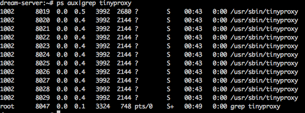
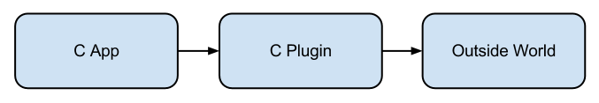
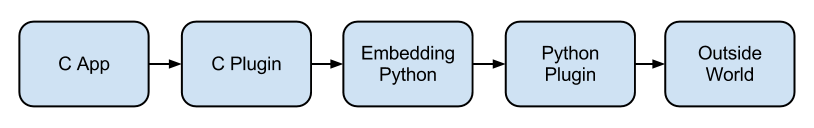

用Python替换C代码
A Python Successful Story
Adieu
Oct 21, 2011
About Me

- 从2007年开始使用Python
- 主要使用Python + Django进行网站开发
- 平时也使用Python做点兴趣项目
Why?
I don’t think necessity is the mother of invention – invention, in my opinion, arises directly from idleness, possibly also from laziness. To save oneself trouble.
How?
替换C程序
tinyproxy
使用C开发的小型多进程Proxy

tproxy + Python Script
基于Gevent的单进程Proxy
def proxy(data):
recved = len(data)
parser = HttpParser()
parsed = parser.execute(data, recved)
if parsed != recved:
return { 'close':'HTTP/1.0 502 Gateway Error\r\n\r\nError parsing request'}
if not parser.get_url():
return
parsed_url = urlparse.urlparse(parser.get_url())
is_ssl = parsed_url.scheme == "https"
remote = parse_address(parser.get_headers()['Host'], 80)
return {"remote": remote,
"ssl": is_ssl}
替换C插件
pppd与openvpn认证插件开发


def chap_check():
return 1
def chap_verify(username, ourname, id, challenge, response, message, message_space):
result = client.chap_auth(username, base64.encodestring(challenge), base64.encodestring(response))
if result:
if result['result']:
result['password_hash_hash'] = base64.decodestring(result['password_hash_hash'])
result['client_ip'] = long(result['client_ip'])
return result
else:
return result
else:
return {'result': 0}
替换C函数调用
libnfc + swig
from nfc._nfc import * pnd = nfc_connect(None) nfc_initiator_init(pnd) nfc_configure (pnd, NDO_ACTIVATE_FIELD, False) nfc_configure (pnd, NDO_HANDLE_CRC, False) nfc_configure (pnd, NDO_HANDLE_PARITY, True) nfc_configure (pnd, NDO_EASY_FRAMING, False) nfc_configure (pnd, NDO_ACTIVATE_FIELD, True) abtReqa = bytearray(b'\x26') result = nfc_initiator_transceive_bits(pnd, abtReqa,7) print repr(result) abtSelectAll = bytearray(b'\x93\x20') result = nfc_initiator_transceive_bytes(pnd, abtSelectAll, None) print repr(result) abtSelect = bytearray(b'\x93\x70') + result abtSelect = abtSelect + iso14443a_crc(abtSelect) result = nfc_initiator_transceive_bytes(pnd, abtSelect, None) print repr(result) abtHalt = bytearray(b'\x50\x00\x57\xCD') result = nfc_initiator_transceive_bytes(pnd, abtHalt, None) print repr(result)
One more thing...
替换C源代码
RPython
In common parlance, PyPy has been used to mean two things. The first is the RPython translation toolchain, which is a framework for generating dynamic programming language implementations. And the second is one particular implementation that is so generated – an implementation of the Python programming language written in Python itself. It is designed to be flexible and easy to experiment with.
This double usage has proven to be confusing, and we are trying to move away from using the word PyPy to mean both things. From now on we will try to use PyPy to only mean the Python implementation, and say the RPython translation toolchain when we mean the framework.
rpythonic
import os, sys, time
sys.path.append('..')
import rpythonic
rpythonic.set_pypy_root( '../../pypy' )
rpythonic.set_android_sdk_root( '../../android-sdk-linux_x86/' )
rpythonic.set_android_ndk_root( '../../android-ndk-r5b/' )
rpy = rpythonic.RPython('android')
@rpy.standalone
def main():
rpy.setup_display()
package = rpy.compile()
print( package.apk )
Conclusion
- 设计精良的Python程序完全可以替换C程序，提高速度的同时还可以带来可扩展性
- 嵌入到C里面的Python可以用到Python已有的库，让生活变得轻松许多
- Python并不是孤立的世界，通过Python的C扩展，可以将Python与C的世界联系起来
- Python是优秀的编程语言，配合上合适的解析器及编译器，Python可以发挥更大的力量
- 为身为一名Python程序员感到自豪，希望有一天能够用Python来解决所有的编程问题
谢谢
相关链接
- https://github.com/benoitc/tproxy
- http://docs.python.org/extending/embedding.html
- http://www.swig.org/Doc2.0/Python.html
- http://code.google.com/p/rpythonic/
Slides地址